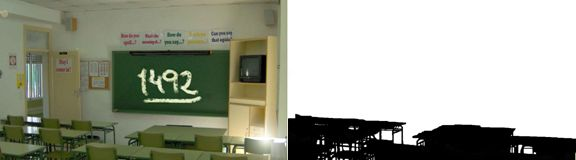

En este panel se configura la apariencia de la escena, en particular de su fondo.
Obligatoria
Esta es la imagen que se ve en el fondo de la escena. La imagen debe de tener un tamaño mínimo de 800x600 y se recomienda que la altura no supere dicha los 600.
Opcional
Consiste en una imagen en blanco y negro que nos indica qué parte de la
imagen del fondo debe dibujarse detrás de objetos, personajes y jugador
y cuál debe pintarse delante. A continuación se muestra una imagen de
fondo y cual sería su máscara frontal:

Como puede apreciarse, la imagen corresponde a una clase. Lo lógico es
que tal como está tomada la imagen, los personajes se sitúen justo
delante de la pizarra pero detrás de los pupitres. Por tanto la máscara
será una imagen en la que los pupitres (primer plano) están en negro y
lo demás en blanco.
Las máscaras frontales en <e-Adventure> comienzan a estar en desuso por la complejidad de uso y limitaciones que presentan. Como más adelante se describe, este comportamiento puede conseguirse (y de forma mucho más refinada) combinando capas y objetos de atrezo.
Opcional
Música de fondo de la escena, que sonará cíclicamente mientras la escena esté en pantalla. Pistas de audio en formato MP3 o MIDI son aceptadas.